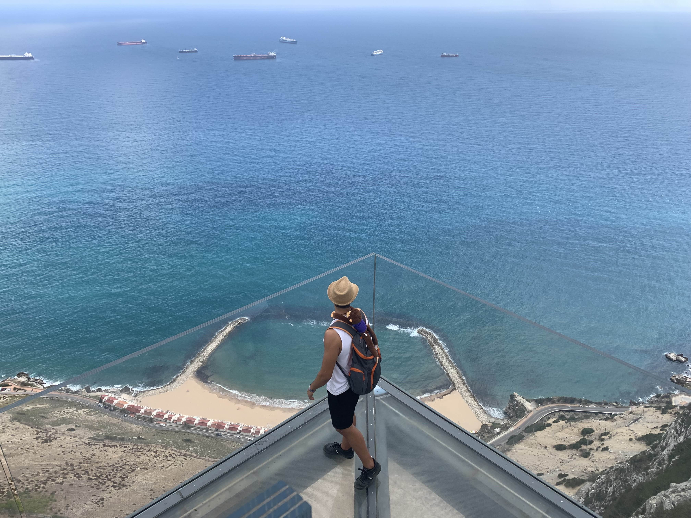
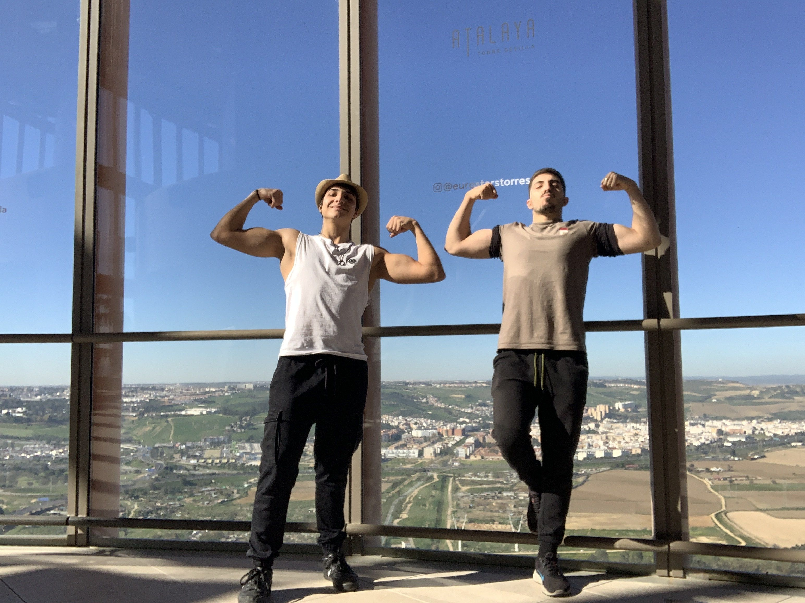
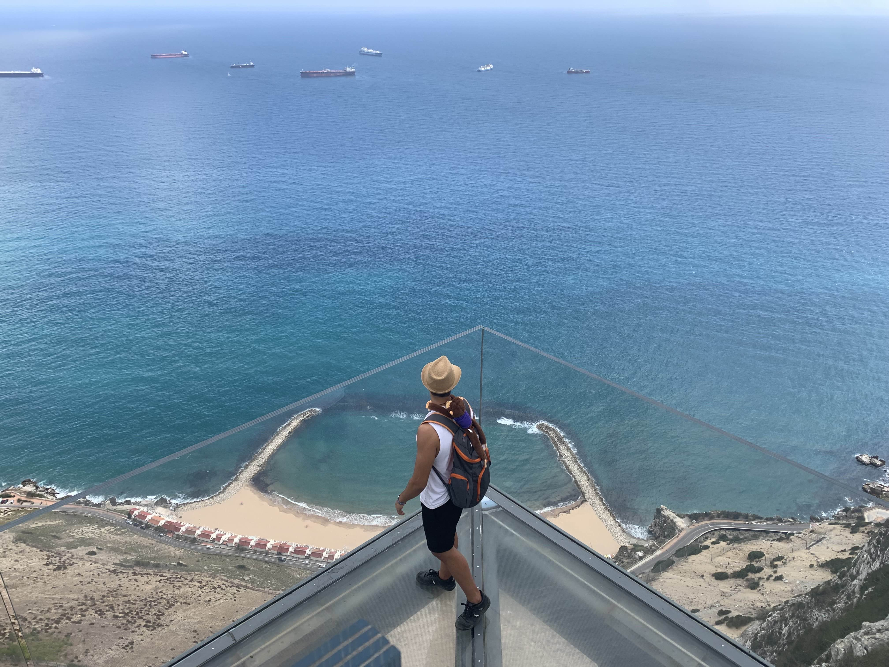
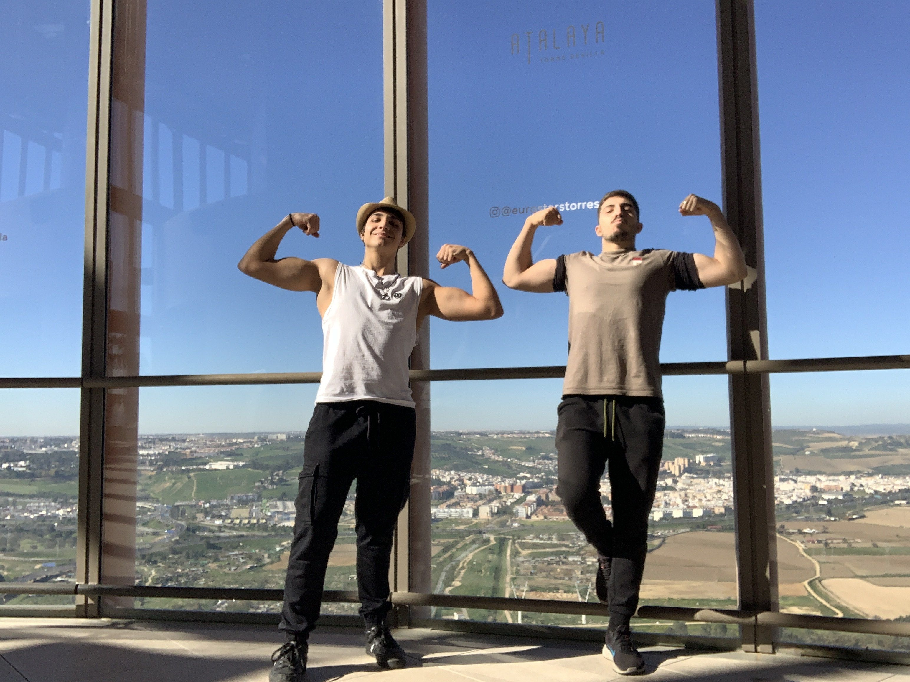
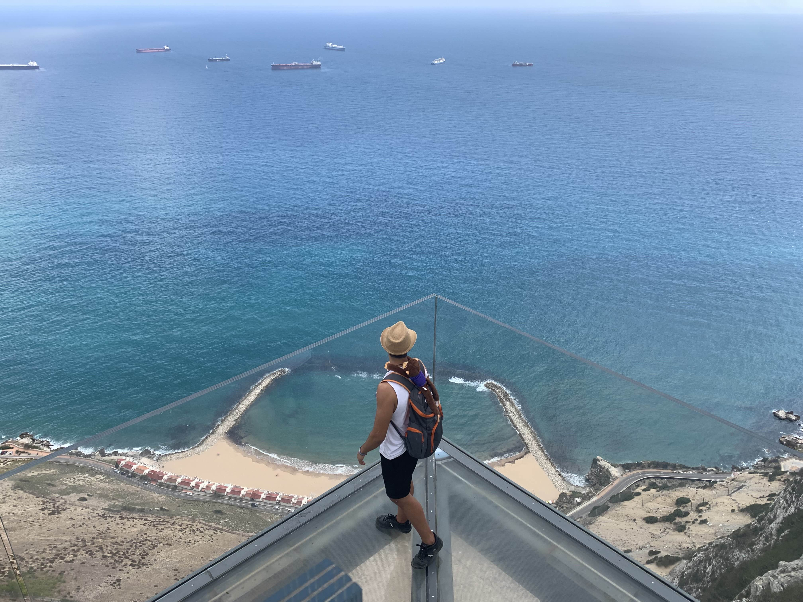
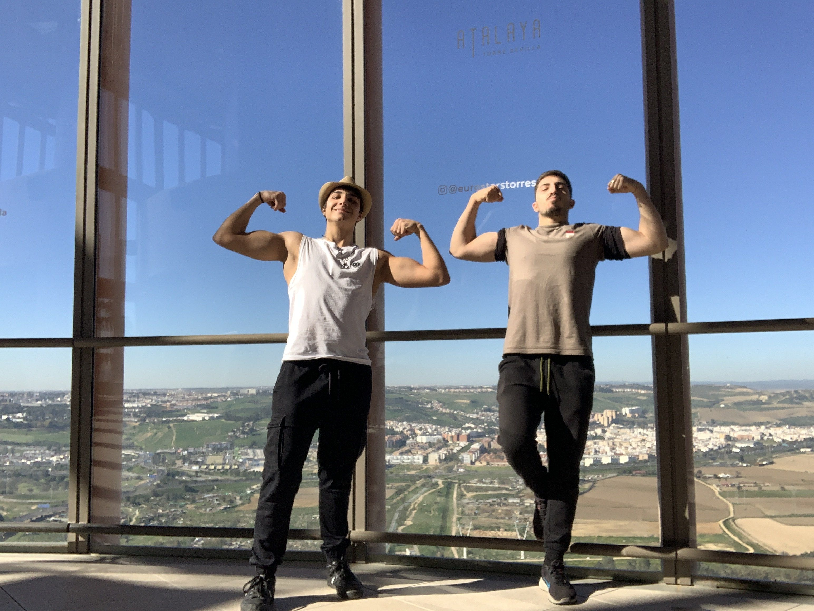

Empecemos hablandote un poco de lo básico, de lo primero de lo que se suele hablar ¿no?
Pues bién, como ya sabrás, mi nombre es Marcos García, tengo 21 añitos y vivo en Málaga de tooa la vida. Sinceramente, no creo que conozcas a alguíen mas malagueño que yo y orgulloso estoy.
Desde que era pequeñillo estuve viviendo en cortijo de torres, cerca de teatinos vaya, e iba a un colegio que estaba por huelin, pero al cambiarme a uno que estaba aquí, en campanillas, nos tuvimos que mudar y desde entonces aquí sigo.
En rasgos generales, soy alguien bastante feliz y social, en su mayoría positivo, pero de esto no hablaré aquí, solo te adelanto que, esto es un resumen muy general de mi persona.
Lo que si te puedo contar es que soy alguíen bastante hablador y conmigo siempre hay tema de conversación, así que por eso no te preocupes.
Me gustan mucho los animales en general, especialmente los gatos. Mi gata Greizzy, o también, como la suelo llamar: "mi gorda", lleva conmigo desde que tengo conciencia, y durante unos 6 años o más años tuve también otro gato, llamado Ruzzy, mundialmente conocido como: "mi gordo", el cual fallecío hace unos meses. Cabe destacar que el cabrón de Ruzzy me ha dejado una de cicatrices pequeñillas de tanto jugar con el que no te imaginas. En cambio, la otra no es tan agresiva, es mas tranquilita, y menos mal, porque si Greizzy fuese igual que Ruzzy, estoy jodido JAJAJA.
También puedo contarte una última cosa y es que tengo un grupo de amigos cercano, prácticamente, con los que llevo una gran gran parte de mi vida a los que considero prácticamente, considero familia y esos son Ismael, Fran, Nicol y Cristian.
Eso es todo lo que te voy a contar por aquí, así que si te interesa, vuelve atrás y sigue leyendo, que hay para rato JAJAJA.
Me encanta viajar y mejorar día a día todo lo que pueda. Al fin y al cabo, si queremos avanzar no hay de otra que hacer cambios, a ser posible, cambios que aporten valor y no que resten.
Soy muuy deportista y me encanta todo lo que tenga que ver con el gym e irme de rutas a ríos o montañas para descubrir que guarda este mundo para nosotros.
Creo que ya es hora de entrar en detalles, ¿no crees?

